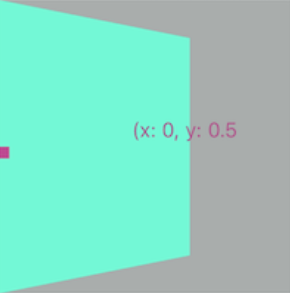
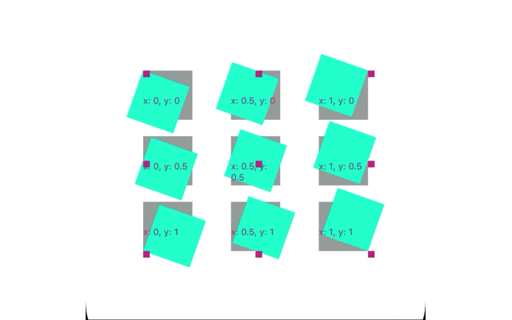
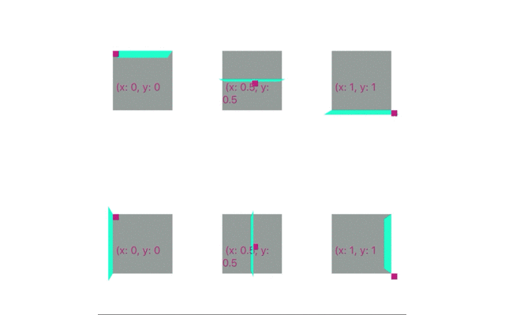
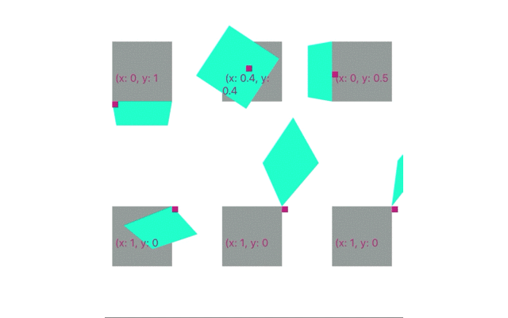

In react-native, sometimes, you may want to rotate a view basing one a specific point instead of the center of the view. Like the cube animation in the instagram stories. Some people think you need a extra transformZ property to achieve that. But, actually, you don’t need that. What you need is Anchor Point.
What is Anchor Point
Web developers may be familiar with transform-origin in css. While in iOS, there is something similar called anchor point.
Anchor point in a view is a point in the unit coordinate space, about which all geometric manipulations to the view occur.
Defines the anchor point of the layer’s bounds rectangle. Animatable.
You specify the value for this property using the unit coordinate space. The default value of this property is (0.5, 0.5), which represents the center of the layer’s bounds rectangle.All geometric manipulations to the view occur about the specified point. For example, applying a rotation transform to a layer with the default anchor point causes the layer to rotate around its center. Changing the anchor point to a different location would cause the layer to rotate around that new point. – Apple dev
By default, the anchor point for the rotation is the center of the view. That means the rotation of a view is based on its center. Inspired by this article, which teaches us how to rotate a view based from the origin point, I got an important clue to implement the anchor point.
Why do we need anchor point in react-native
- Currently, there is no public API in react-native providing the ability to set
transform-originoranchor-point. So you will find it is difficult to do some fancy 3D transform animations. For example, cube animation has some flaws:- There is a gap between the views when translating views in Android
- The angle is not correct, less than 90 degrees, make the animation wired. It is not a cube, if you try to adjust the angle, you will break all the things.
- part of the view is clipped, not rendering on the screen.

Actually, I use this function to solve all these issues. But it is code for company, I can’t make it public. The key thing is to set anchor point as (1, 0.5) for the left view and (0, 0.5) for the right view.
- Beside, for this foldview animation foldview-in-react-native, one of the most import things is to use
transformOrigin. But, this function works withtransform matrix, and isn’t easy to use. So, I madereact-native-anchor-point. It looks simple and tricky, but actually very powerful. With it, you can use the transform API in react-native to achieve many fancy animations.
transformOrigin in react-native-foldview
“Since the transform origin of a view is at its horizontal and vertical center by default, to rotate it in x-space along the bottom, we need to first shift our view’s origin on the y-axis by 50% of the view’s height, then apply rotation, then shift it back to the original center.” — @jmurzy
So @jmurze implemented a [function]
(https://gist.github.com/jmurzy/0d62c0b5ea88ca806c16b5e8a16deb6a#file-foldview-transformutil-transformorigin-js)
1 | function transformOrigin(matrix, origin) { |
Here
reuseTranslate3dCommandin the react-native source code, is to replace the 12th, 13th, 14th element in the matrix by parameters, z, y, z to achievetranslationeffect.reuseTranslate3dCommandis called in processTransform.js#L79, in which, RN generates a transform matrix based ontransform objectwe provide.
[https://github.com/facebook/react-native/blob/a1ac2518a364ebcd3cc024a22229cadc1791e1c4/Libraries/StyleSheet/processTransform.js#L43]
What transformOrigin does is to
1 | 1. translate the view by x, y, z on the x-axis, y-axis, z-axis |
Plain Code
After understanding the above things, we know we can can use transform style to set the anchor point. For example, the following code sets the anchor point of the view as (0, 0.5). This will make the rotate base on the left side of the view.
1 | const transform = { |

Remember that RN generates only one single transform matrix, based on transform object we provide, here. So, finally, the above code will be converted into a transform matrix, with which the rendering system can render a view with a given layout and shape. There are some transform matrix knowledge involved. ref: tutorial-3-matrices
react-native-anchor-point
In this package, I provides a function withAnchorPoint, to inject the above code into your transform object. It works well with the original way you use transform and. So, you don’t have to use ref to set the transformOrigin any more. This would make the 3d transform in React Native easier to implement.



And it works well with the react-native transform API
1 | import { withAnchorPoint } from 'react-native-anchor-point'; |
Ref
scan qr code and share this article